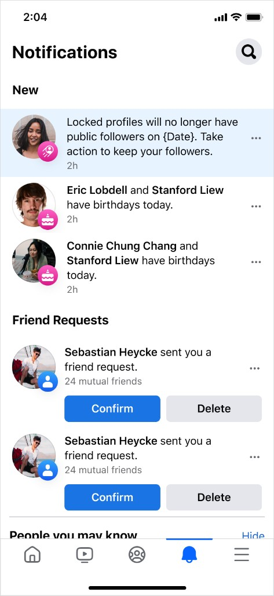

User flows · Meta
How do you change a privacy setting for 100M people without causing panic or making them feel punished?
Facebook had ~100M users with a settings contradiction: profiles were both locked (privacy-restricted) and allowed public followers. This initiative deprecated the "publicly followable" option for locked profiles, and the process required users who wanted public followers either to opt into professional mode or lose their existing public followers entirely.
At this scale, poorly framed notifications and confusing flows would cause churn, complaints and loss of trust. My role as content designer was to make sure that didn't happen.
The core content challenge was an emotional one. The framing needed to be honest without causing alarm, and clear enough that users could make their own choice rather than simply react to the situation.
Additionally, the same baseline flow needed to serve very different people: adults who'd accumulated public followers over years, teenagers with locked profiles who may not have fully understood their settings, and gen pop users who hadn't opened the app in months.
I directed content across 8 multi-screen flows and 5 cross-channel emails. A few decisions that mattered most:

Notification
1 of 8
94.4% of users who entered the flow confirmed they wanted privacy, which told us that the framing worked. People understood their choice and made it decisively. The more surprising outcome was that 5.6% elected to convert to professional mode to keep their public followers and lean into their identities as creators. The project shipped without incident across all cohorts, with no SEVs or rollbacks.